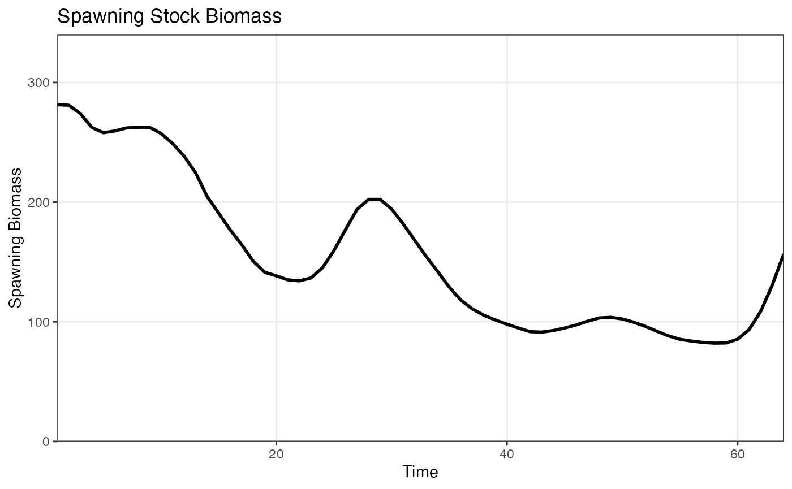
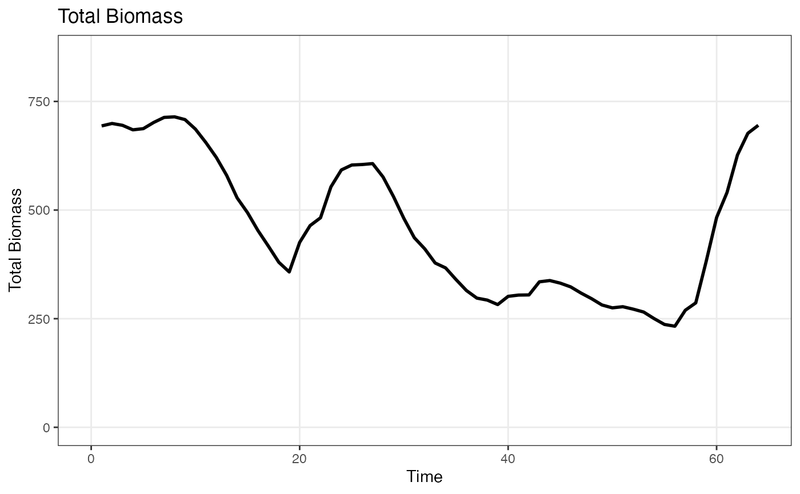
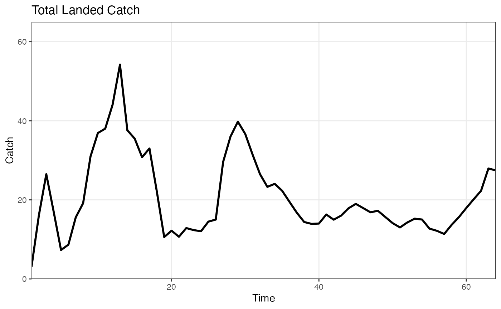

08_alaska_sablefish.RmdafscOM was originally developed to be used as a
population simulation model for sablefish (Anoplopoma fimbria)
in Alaska. Consequently, the package has been thoroughly tested for its
ability to accurately reproduce timeseries of derived quantities (e.g.,
spawning biomass, age structure), given specific demographic parameters,
and historical catch and recruitment timeseries. Below shows how to set
up an afscOM model to replicate the estimated dynamics of
the Alaska sablefish population (Goethel et al. 2023).
Start by specifying the model dimensions and dimension names.
library(afscOM)
nyears <- 64 # The model starts in 1960
nages <- 30 # 30 age-classes (ages 2-31)
nsexes <- 2 # Both females and males
nregions <- 1 # Alaska-wide model (no spatial structure)
nfleets <- 2 # Fixed gear and trawl fisheries
nsurveys <- 2 # Longline and trawl surveys
dimension_names <- list(
"time" = 1:nyears,
"age" = 2:31,
"sex" = c("F", "M"),
"region" = "alaska",
"fleet" = c("Fixed", "Trawl")
)
model_params <- set_model_params(nyears, nages, nsexes, nregions, nfleets)Next, specify demographic parameters matrices (for more information see the vignette on “Specifying Demographic Parameters”).
In brief, the demographic parameters specified here define a population with constant natural mortality across time, age, and region (small offset between male and female mortality), age-specific maturity, and age-sex specific weight at age.
Selectivity differs across age, sex, and fleet for both fisheries and surveys. Fishery retention is 1 across all ages and sexes, indicating that no discarding occurs.
assessment <- sablefish_assessment_data
# Mortality is constant across time, age, and region
M <- 0.113179
mort <- generate_param_matrix(M, dimension_names = dimension_names)
mort[,,2,] <- mort[,,2,]-0.00819813 # Small offset for male natural mortality
# 50-50 sex ratio across all times and regions
prop_males <- 0.5
sexrat <- generate_param_matrix(prop_males, dimension_names = dimension_names)
# Full retention for all fisheries
retention <- 1.0
ret <- generate_param_matrix(retention, dimension_names = dimension_names, include_fleet_dim = TRUE)
# No discard mortality as no discarding is allowed
discard <- 0.0
dmr <- generate_param_matrix(discard, dimension_names = dimension_names, include_fleet_dim = TRUE)
# Maturity varies by age
maturity <- assessment$growthmat[, "mage.block1"]
mat <- generate_param_matrix(maturity, dimension_names = dimension_names, by="age")
# Weight varies by age and sex
weight_mat <- matrix(NA, nrow=nages, ncol=nsexes, dimnames=dimension_names[c("age", "sex")])
weight_mat[,1] <- assessment$growthmat[, "wt.f.block1"]
weight_mat[,2] <- assessment$growthmat[, "wt.m.block1"]
waa <- generate_param_matrix(weight_mat, dimension_names = dimension_names, by=c("age", "sex"))
# Fishery and Survey selectivity vaies by age, sex, and fleet
selex_mat <- array(NA, dim=c(nages, nsexes, nfleets), dimnames=dimension_names[c("age", "sex", "fleet")])
selex_mat[,1,1] <- assessment$agesel[,"fish1sel.f"]
selex_mat[,2,1] <- assessment$agesel[,"fish1sel.m"]
selex_mat[,1,2] <- assessment$agesel[,"fish3sel.f"]
selex_mat[,2,2] <- assessment$agesel[,"fish3sel.m"]
sel <- generate_param_matrix(selex_mat, dimension_names = dimension_names, by=c("age", "sex", "fleet"), include_fleet_dim = TRUE)
# Some time-varying selectivity for the fixed-gear fishery. First timeblock from 1960-1995,
# second timeblock from 1996-2016, third timeblock from 2017-2024
sel[(36:56),,1,,1] <- matrix(rep(assessment$agesel[, "fish4sel.f"], length(36:56)), ncol=nages, byrow=TRUE)
sel[(36:56),,2,,1] <- matrix(rep(assessment$agesel[, "fish4sel.m"], length(36:56)), ncol=nages, byrow=TRUE)
sel[(57:nyears),,1,,1] <- matrix(rep(assessment$agesel[, "fish5sel.f"], length(57:nyears)), ncol=nages, byrow=TRUE)
sel[(57:nyears),,2,,1] <- matrix(rep(assessment$agesel[, "fish5sel.m"], length(57:nyears)), ncol=nages, byrow=TRUE)
survey_selex_mat <- array(NA, dim=c(nages, nsexes, 2), dimnames=dimension_names[c("age", "sex", "fleet")])
survey_selex_mat[,1,1] <- assessment$agesel[,"srv1sel.f"]
survey_selex_mat[,2,1] <- assessment$agesel[,"srv1sel.m"]
survey_selex_mat[,1,2] <- assessment$agesel[,"srv7sel.f"]
survey_selex_mat[,2,2] <- assessment$agesel[,"srv7sel.m"]
survey_sel <- generate_param_matrix(survey_selex_mat, dimension_names = dimension_names, by=c("age", "sex", "fleet"), include_fleet_dim = TRUE)
# Some time-varying selectivity for the longline survey. First timeblock from 1960-2017,
# second timeblock from 2018-2024
survey_sel[(57:nyears),,1,,1] <- matrix(rep(assessment$agesel[, "srv10sel.f"], length(57:nyears)), ncol=nages, byrow=TRUE)
survey_sel[(57:nyears),,2,,1] <- matrix(rep(assessment$agesel[, "srv10sel.m"], length(57:nyears)), ncol=nages, byrow=TRUE)All demographic matrices are added to a list object:
dem_params <- list(
waa=waa,
mat=mat,
mort=mort,
sexrat=sexrat,
sel=sel,
ret=ret,
dmr=dmr,
surv_sel=survey_sel
)An initial numbers-at-age matrix is defined as is a timeseries of global recruitment.
Create a timeseries of fishing mortality rates. Since there is only
one region, the dimensions are [nyears, nfleets, nregions]
or [64, 2, 1].
f_timeseries <- assessment$t.series[,c("F_HAL", "F_TWL")] %>% as.matrix
f_timeseries <- array(f_timeseries, dim=c(nyears, nfleets, nregions),
dimnames = list("time"=1:nyears,
"fleet"=c("Fixed", "Trawl"),
"region"="alaska"
))Beause removals are specified as fishing mortality rates, the
apportionment matrices are not needed. We also need to swtich the
removals_input option to “F”.
model_options <- setup_model_options(model_params)
model_options$removals_input = "F"
model_options$simulate_observations <- FALSENow, the model is projected forward with the following call:
om1 <- project(
init_naa = init_naa,
removals_timeseries = f_timeseries,
recruitment = recruitment,
dem_params = dem_params,
nyears = nyears,
model_options = model_options
)After running the prohjection model, many derived quantities such as spawning biomass, total biomass, fishing mortality, and landed catch can be computed using built-in functions.
ssb <- afscOM::compute_ssb(om1$naa, dem_params)
bio <- afscOM::compute_bio(om1$naa, dem_params)
catch <- afscOM::compute_total_catch(om1$land_caa)
plot_ssb(ssb)
plot_bio(bio)
plot_catch(catch)## Warning: The `x` argument of `as_tibble.matrix()` must have unique column names if
## `.name_repair` is omitted as of tibble 2.0.0.
## ℹ Using compatibility `.name_repair`.
## ℹ The deprecated feature was likely used in the afscOM package.
## Please report the issue to the authors.
## This warning is displayed once every 8 hours.
## Call `lifecycle::last_lifecycle_warnings()` to see where this warning was
## generated.